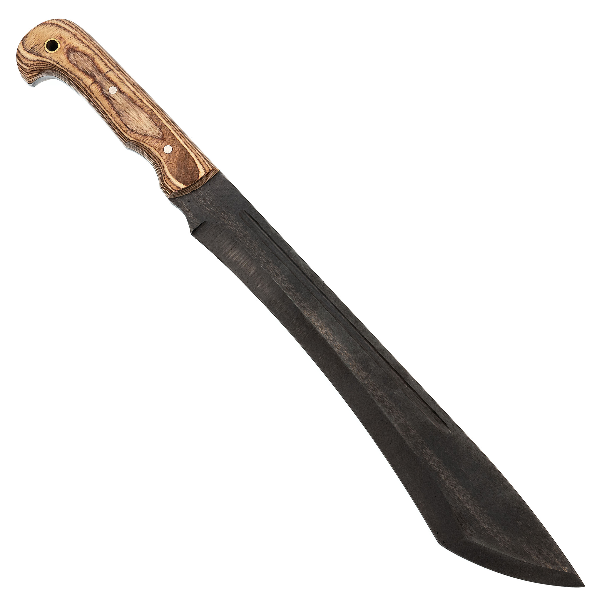

Мачете Риддик, сталь 65Г, Ворсма
Описание товара
При совершении небольшого полевого выхода или при поездке на пикник не всегда есть необходимость и желание брать с собой тяжелый топор.
Характеристики товара
- Производитель: Металлист
- Марка стали: 65Г
- Длина клинка (мм): 310
- Ширина клинка (мм): 53
- Толщина обуха (мм): 5.5
- Материал рукояти: Фанера
- Длина (мм): 465
- Материал лезвий: Сталь 65г
Подробное описание товара
В этом случае прекрасным вариантом станет использование мачете Риддик, которое выполнено по мотивам мачете героя из одноименного фильма. Форма клинка у этой модели позволит легко перерубить небольшое деревце, расщепить полено и наколоть щепы для разведения огня. Для удобной и безопасной переноски в комплекте есть удобный кожаный чехол. Приобрести нож мачете Риддик от Ворсма можно в качестве практичного подарка заядлому туристу.